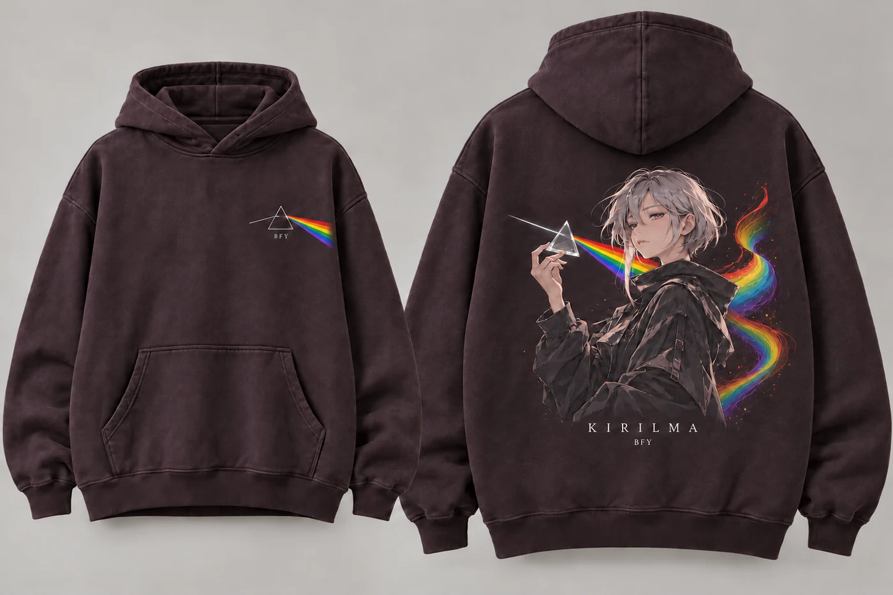
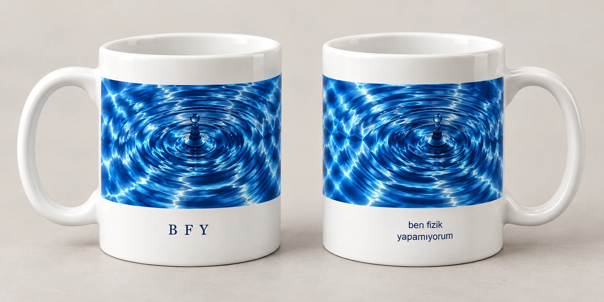
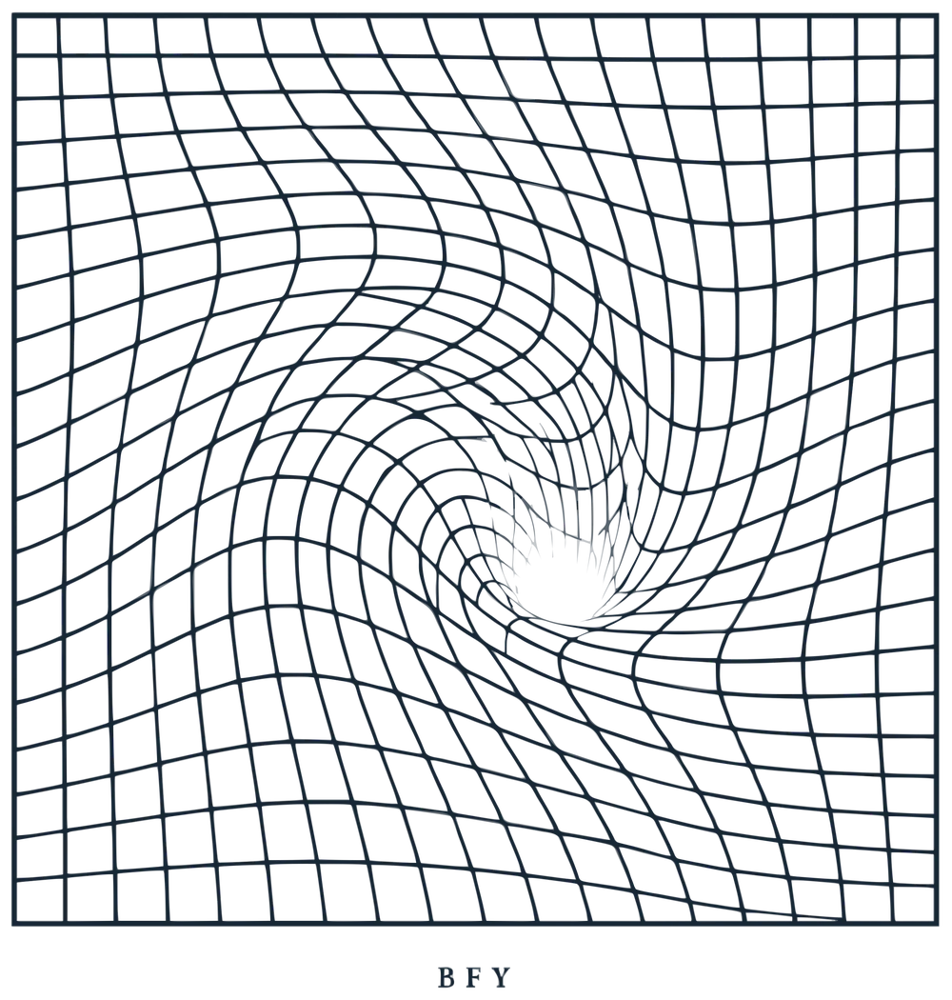

İLK KOLEKSİYON / 01
Fiziği
üzerinde
taşı.
Işığın renkleri, hareketin izleri, çizgilerin oyunu. Merakını yanında taşıyacağın tişörtler, hoodie’ler ve kupalar. Beğendiğin tasarımı seç, satışa açıldığında haber almak için bize yaz.
Koleksiyonu keşfet
MERAKIN İZİNDE.
Kendi çizgini bul.
14 tasarım

Merakına bir mola.

Işığın içindeki bütün renkler.

Sesin bir şekli olsaydı.

Bir an. Bir hareket.

Hareketten ışığa.

Yukarı bakmaya devam.

İki dalga. Yeni bir desen.

Görünmeyenin izi.

Bir çizginin ötesinde.

Bakışın yön değiştiriyor.

Düz yüzey. Başka bir boyut.

Küçük bir imza.

Manyetik alanın izinde.

Işığın çevresinde sessizlik.
İlk koleksiyon hazırlanıyor. Şu anda ödeme veya ön sipariş almıyoruz. Tasarımlar önizlemedir; kesin fiyat, renk, beden ve ürün fotoğrafları satış açıldığında paylaşılacak. Beğendiğin ürünün sayfasından Instagram mesajını hazırlayabilirsin.
BEDENİNİ TAHMİN ETME, ÖLÇ.
En iyi referans,
üzerine iyi oturan kıyafetin.
Bir mezura, düz bir zemin ve sevdiğin bir tişört yeterli.
- Düz zemine ser.
İyi oturan tişörtünü veya hoodie’ni düz zemine koy. Kırışıklıkları aç; kumaşı çekiştirip esnetme.
- Enini ve boyunu ölç.
En: koltuk altından diğer koltuk altına, düz çizgide. Boy: omuzun yaka ile birleştiği yüksek noktadan alt kenara. En ölçüsü, göğüs çevresiyle aynı değildir.
- Seçtiğin ürünün tablosuyla karşılaştır.
Tişört ve hoodie kalıpları farklı olabilir. Sipariş verirken alıştığın beden harfine değil, ürünün santimetre ölçülerine bak.
Kesin beden tabloları ve üreticinin ölçüm toleransı, ürünler satışa açılmadan önce ürün sayfalarına eklenecek.